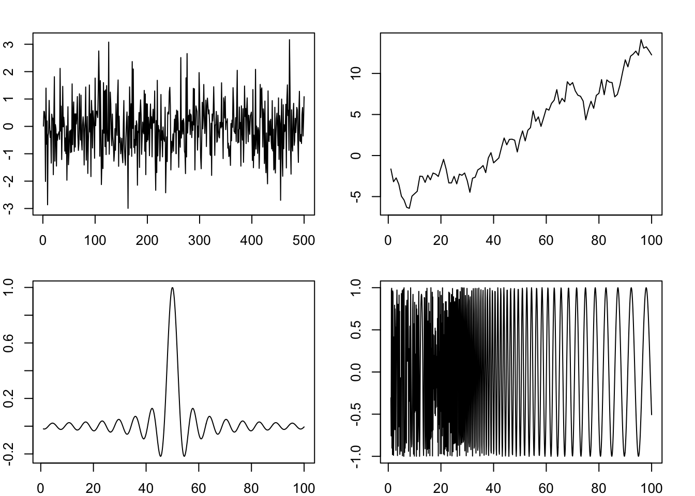
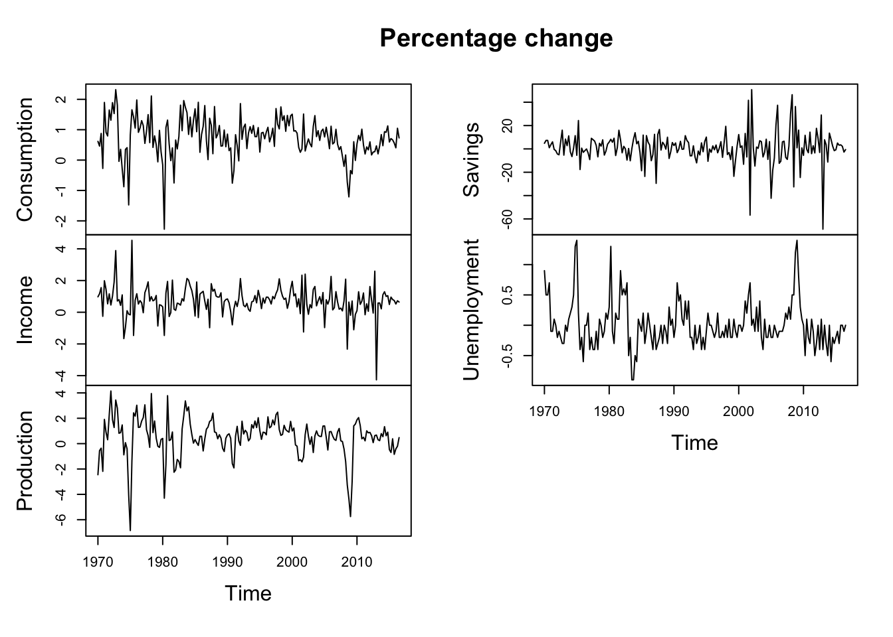

4 Stationarity
4.1 Stationary Process
Definition 4.1 A stochastic process is said to be strictly stationary if its properties are unaffected by a change of time origin. In other words, the joint distribution at any set of time is not affect by an arbitrary shift along the time axis.
Definition 4.2 A stochastic process is called covariance stationary (or weak stationary) if its means, variances, and covariances are independent of time. Formally, a process \(\{y_t\}\) is covariance stationary if for all \(t\) it holds that
- \(\mathbb{E}(y_t) = \mu < \infty\);
- \(\text{var}(y_t) = \gamma_{_0} < \infty\);
- \(\text{cov}(y_t,y_{t-k})=\gamma_k\), for \(k=1,2,3,\dots\)
Stationarity is an important concept in time series analysis. It basically says the statistical properties of a time series are stable over time. Otherwise, if the statistical properties vary with time, statistics estimated from past values, such autocorrelations, would be much less meaningful. Strict stationarity requires the joint distribution being stable, that is moments of any order would be stable over time. In practice, mostly we only care about the first- and second-order moments, that is means and variances and covariances. Therefore, covariance stationary is sufficient.
Figure 4.1 shows some examples of stationary and non-stationary time series. Only the first one is stationary (it is generated from \(i.i.d\) normal distribution). The second one is not stationary as its mean is not constant over time. The third one is not stationary as its variance is not constant. The last one is not stationary either, because its covariance is not constant.
Real-life time series are rarely stationary. But they can be transformed to (quasi) stationary by differencing. Figure 4.2 shows some examples of the first-order (log) differences of real-life time series. They more or less exhibit some properties of stationarity, but not perfectly stationary. The series can be further “stationarized” by taking a second-order difference. But these examples are acceptable to be treated as stationary in our models. Even if they are not perfectly stationary, the model can be thought of being used to “extract” their stationary properties.

Proposition 4.1 For stationary series, it holds that \(\gamma_k = \gamma_{-k}\).
Proof. By definition,
\[ \gamma_k = \mathbb{E}[(y_t-\mu)(y_{t-k}-\mu)], \]
\[ \gamma_{-k} = \mathbb{E}[(y_t-\mu)(y_{t+k}-\mu)]. \]
Since \(y_t\) is stationary, \(\gamma_k\) is invariant with time. Let \(t'=t+k\), we have
\[ \begin{aligned} \gamma_{k} &= \mathbb{E}[(y_{t'}-\mu)(y_{t'-k}-\mu)] \\ &= \mathbb{E}[(y_{t+k}-\mu)(y_{t}-\mu)] \\ &= \gamma_{-k}. \end{aligned} \]
4.2 Ergodicity
Temporal dependence is an important feature of time series variables. This dependence is both a bless and a curve. Autocorrelation enables us to make predictions based on past experiences. However, as we will see in later chapters, it also invalidates theorems that usually require \(iid\) assumptions. Ideally, we would like the temporal dependence to be not too strong. This is the property of ergodicity.
Definition 4.3 A stationary process \(\{y_t\}\) is ergodic if
\[ \lim_{n\to\infty} |\mathbb{E}[f(y_t...y_{t+k})g(y_{t+n}...y_{t+n+k})]|=|\mathbb{E}[f(y_t...y_{t+k})]||\mathbb{E}[g(y_{t+n}...y_{t+n+k})]|. \]
Heuristically, ergodicity means if two random variables are positioned far enough in the sequence, they become almost independent. In other words, ergodicity is a restriction on dependency. An ergodic process allows serial correlation, but the serial correlation disappears if the two observations are far apart. Ergodicity is important because as we will see in later chapters, the Law of Large Numbers or the Central Limit Theorem will not hold without it.
Theorem 4.1 A stationary time series is ergodic if \(\sum_{k=0}^{\infty} |\gamma_k| < \infty\).
Proof. A rigorous proof is not necessary. It is enough to give an intuition why autocorrelation disappears for far apart variables. Note that \(\sum_{k=0}^{\infty} |\gamma_k|\) is monotonic and increasing, it converges. Therefore, \(\gamma_k \to 0\) by Cauchy Criterion.
4.3 White Noise
White noise is a special stationary process that is an important building block of many time series models.
Definition 4.4 A stochastic process \(w_t\) is called white noise if its has constant mean \(0\) and variance \(\sigma^2\) and no serial correlation \(\text{cov}(w_t, w_{t-k})=0\) for any \(k \neq 0\). The white noise process is denoted as
\[ w_t \sim \text{WN}(0, \sigma^2). \]
This is the weakest requirement for while noise. It only requires no serial correlation. We may impose further assumptions. If every \(w_t\) is independent, it becomes independent white noise \(w_t \sim \perp\text{WN}(0, \sigma^2)\). Independence does not imply identical distribution. If every \(w_t\) is independently and identically distributed, it is called \(i.i.d\) white noise, \(w_t \overset{iid}{\sim} \text{WN}(0, \sigma^2)\). If the distribution is normal, it becomes the most perfect white noise, that is \(i.i.d\) Gaussian white noise, \(w_t \overset{iid}{\sim} N(0, \sigma^2)\). The first plot of Figure 4.1 is a demonstration of the \(i.i.d\) Gaussian white noise. In most cases, the weakest form of white noise is sufficient.
Exercise
Prove that a while noise process is stationary.